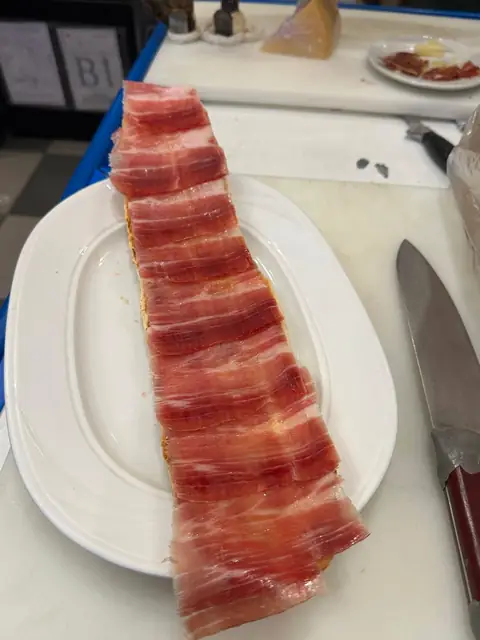
Tosta de jamón ibérico
El jamón se corta en la barra y llega en tosta, en plato o en bocadillo. La tosta es la que más destacan nuestros clientes.
“…a destacar la tosta de jamón ibérico.”Reseña en Google
Abierto todos los días desde las 6:30
Cafetería · Cervecería · Alcorcón
Café a primera hora, tostas y raciones a mediodía, cañas hasta la madrugada. Un bar de barrio con el jamón como protagonista.
La casa
Jamón & Pan es cafetería a primera hora y cervecería hasta la madrugada. Un sitio sencillo y cercano para el café de la mañana, las raciones de mediodía y las cañas con los amigos por la noche.
Aquí el jamón manda: se corta en la barra y llega en plato, en tosta o en bocadillo. Y con la bebida, siempre llega algo para picar. En verano, la terraza.
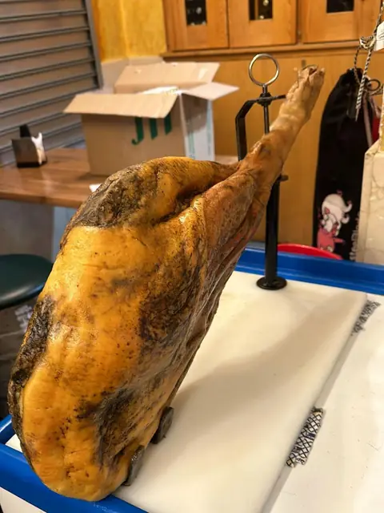
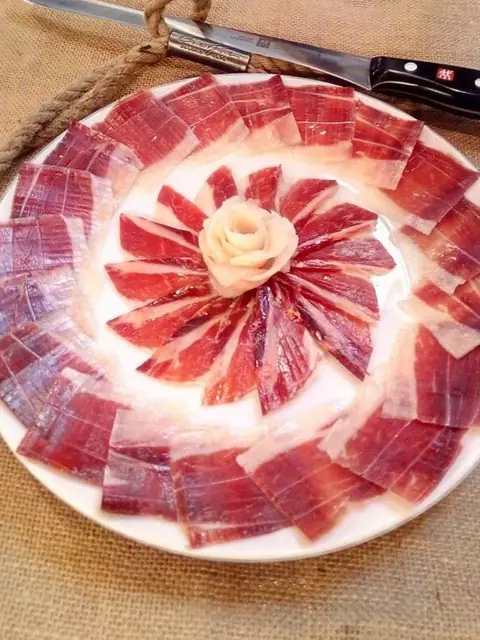
Fotos del local
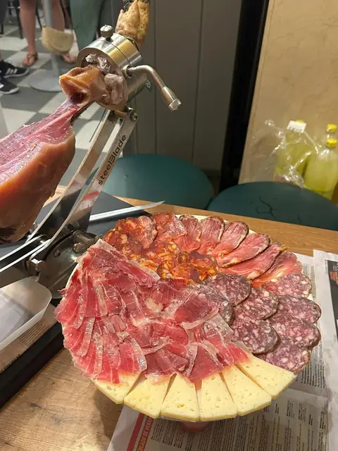
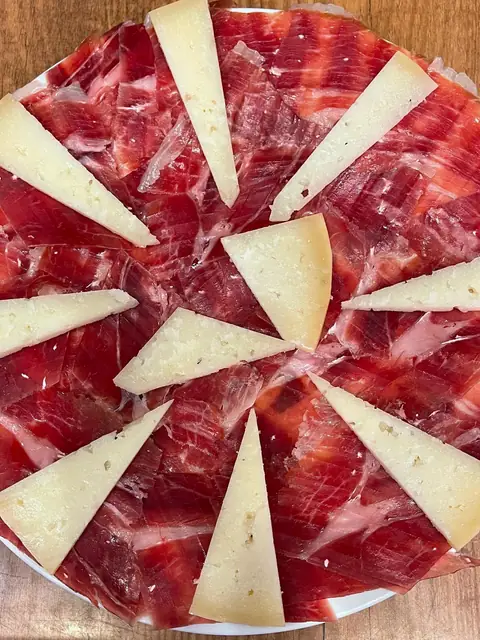
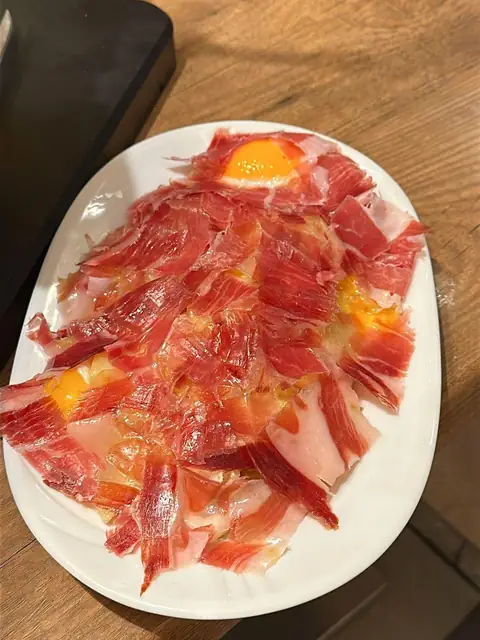
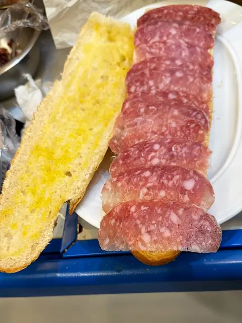
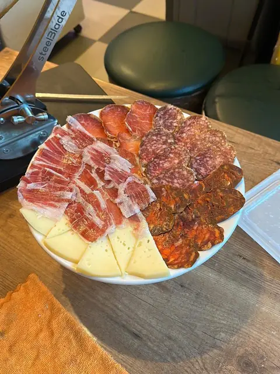
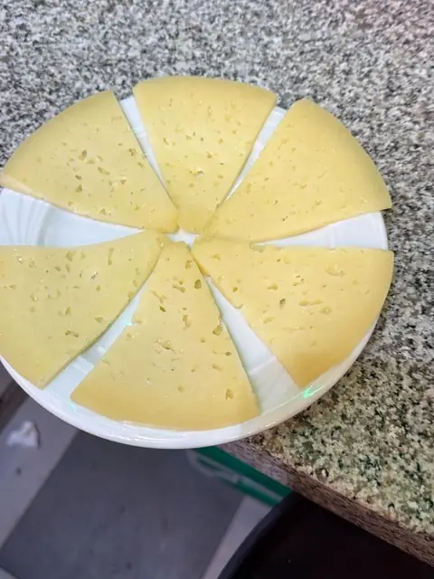
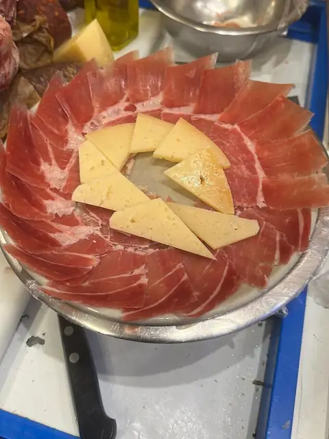
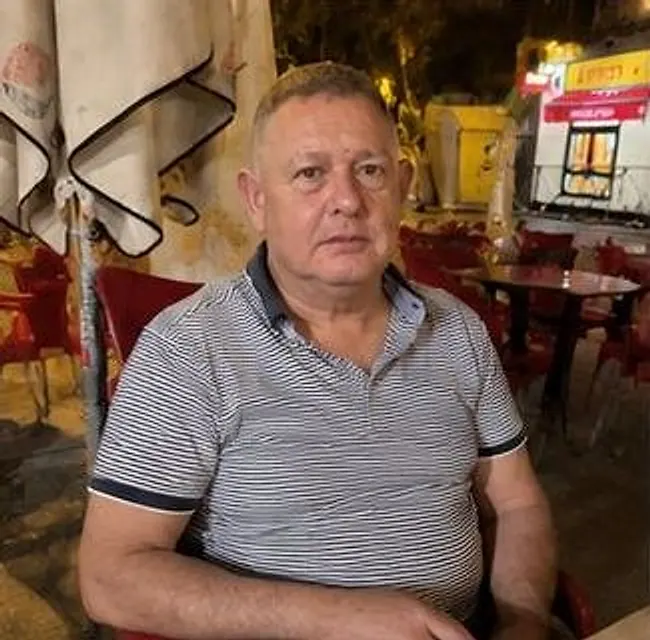
Fotos hechas en Jamón & Pan. La carta completa, en la barra.
La carta
Jamón, pan y los clásicos de toda la vida. Bocadillos, montados y comida rápida, con precios, en la carta.
Lo que dicen
“Bar de barrio de toda la vida, a destacar la tosta de jamón ibérico. Buenas tapas. Valor seguro”
“Buena ración de patatas con jamón y muy buenos bocadillos.”
“Buen servicio, buenos precios, y los camareros unas maquinas.”
Ven a vernos
Abierto todos los días desde las 6:30
| Lunes | 6:30 – 2:00 |
|---|---|
| Martes | 6:30 – 2:00 |
| Miércoles | 6:30 – 2:00 |
| Jueves | 6:30 – 2:00 |
| Viernes | 6:30 – 2:30 |
| Sábado | 6:30 – 2:30 |
| Domingo | 6:30 – 2:00 |
El cierre es de madrugada, ya al día siguiente. En festivos, mejor llamar antes.
Plus code 85RC+5F Alcorcón
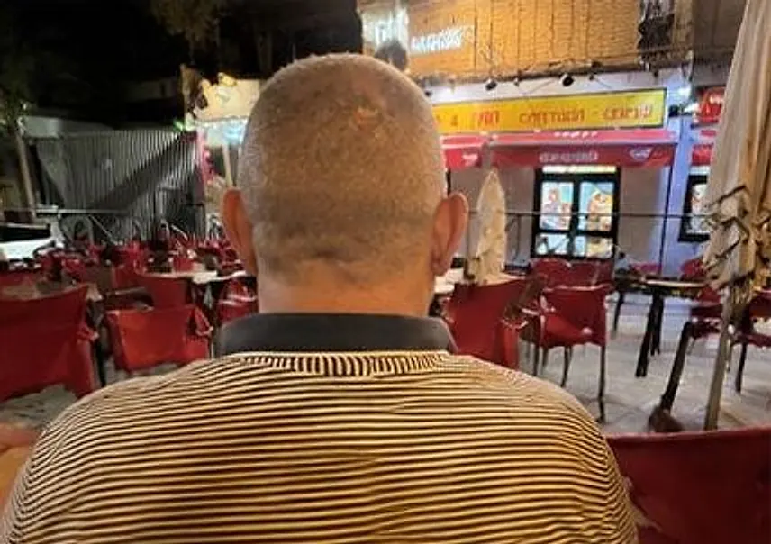